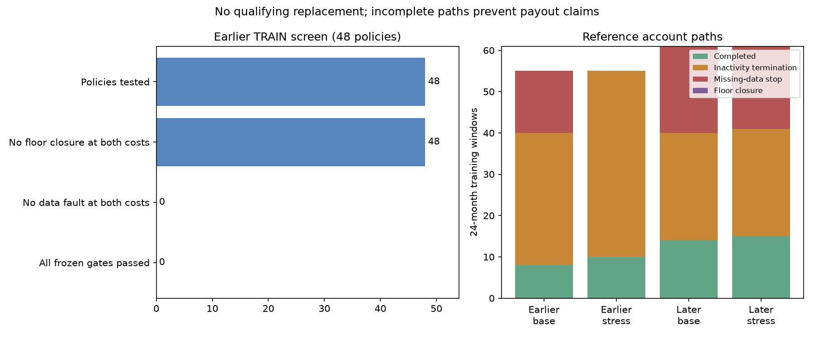

Completed 48 frozen account and sleeve policies using training data only. None passed the predefined gates. The deployed Fortress settings remain unchanged.
These are incomplete research paths, not payout forecasts. Missing source prices and conservative inactivity termination prevent a reliable full-horizon comparison. Cash shown below is partial trader cash received before a stop; it is not net trading profit or evidence of a viable policy.
The joint minute replay includes 1,808 intraday and 539 overnight signal opportunities, raw historical prices, full gap losses, protective brackets and session-ending daily-loss liquidations. It resumes after a daily-loss stop in the next session and closes permanently only at the static account floor. The former blanket $2,000 drawdown gate is removed. A 20-micro cap, conservative news-opening limits, prior-minute volume capacity and known-calendar entry guards apply. Those extra guards are research assumptions, not verified individual account terms.
This is a Fortress-style prototype, not execution parity with the deployed card: routing, calendar guards and exits differ. It cannot establish that the deployed champion earned or lost these amounts.
| Stage | Windows | Window starts |
|---|---|---|
| Earlier TRAIN | 55 | 2010-07 to 2015-01 |
| Later TRAIN reference only | 61 | 2017-01 to 2022-01 |
48 configurations vary retained balance ($2,000/$5,000/$8,500), fixed versus risk-based contracts, risk fraction (25%/50%), overnight activation and daily versus hybrid payout paths. Rank only on earlier training windows; require no floor closures or data faults, positive economic value, at least 5% more value and no less trader cash than the reference at both base and doubled costs. No policy qualified, so no candidate was selected and the planned controls were not run. These training periods have been reused historically; they are not independent unseen evidence.

| period | cost | windows | Missing data | Inactivity | Floor closure | Completed |
|---|---|---|---|---|---|---|
| earlier | base | 55 | 15 | 32 | 0 | 8 |
| earlier | cost2 | 55 | 0 | 45 | 0 | 10 |
| later | base | 61 | 21 | 26 | 0 | 14 |
| later | cost2 | 61 | 20 | 26 | 0 | 15 |
22 synthetic tests passed. All 48 earlier summary and raw outcome arrays reconcile; they represent 10 distinct outcome arrays. Independent entry, stop, target, fee and trade-accounting formulas checked 21,747 closed reference trades. Instrumented source parity is a diagnostic check, not independent simulator validation.
A representative stop occurs at 2014-07-23 05:26 UTC: the held NQ proxy has no quote since 05:20 while ES still has prices. The replay stops instead of inventing a liquidation fill. Inactivity closure is a conservative research treatment of an account clause saying it may close; it is not asserted as certain broker behavior.
Audit scope deviation: First audit accidentally replayed first registered candidate at two laterTRAIN diagnostic starts (2017Jan,2022Jan) after all48 rejected. No alternative chosen, no settings changed, no validation/test accessed. LaterTRAIN not entirely sealed for that rejected policy; these two cases are not confirmation evidence. Corrected audit limits alternate diagnostic cases to earlierTRAIN.
| Policy | Base partial cash | Stress partial cash | Base data faults | Stress data faults | Base inactivity | Stress inactivity | Qualifies |
|---|---|---|---|---|---|---|---|
| K2000_E1_F0.5_N0_P0 | 57.80 | 11.32 | 25 | 14 | 30 | 41 | False |
| K2000_E1_F0.5_N0_P1 | 57.80 | 11.32 | 25 | 14 | 30 | 41 | False |
| K2000_E1_F0.5_N1_P0 | 46.46 | 10.10 | 54 | 52 | 1 | 3 | False |
| K2000_E1_F0.5_N1_P1 | 46.46 | 10.10 | 54 | 52 | 1 | 3 | False |
| K2000_E1_F0.25_N0_P0 | 17.86 | 9.09 | 33 | 16 | 22 | 39 | False |
| K2000_E1_F0.25_N0_P1 | 17.86 | 9.09 | 33 | 16 | 22 | 39 | False |
| K2000_E0_F0.25_N0_P0 | 0.00 | 0.00 | 15 | 0 | 32 | 45 | False |
| K2000_E0_F0.25_N0_P1 | 0.00 | 0.00 | 15 | 0 | 32 | 45 | False |
| K2000_E0_F0.25_N1_P0 | 0.00 | 0.00 | 55 | 55 | 0 | 0 | False |
| K2000_E0_F0.25_N1_P1 | 0.00 | 0.00 | 55 | 55 | 0 | 0 | False |
| K2000_E0_F0.5_N0_P0 | 0.00 | 0.00 | 15 | 0 | 32 | 45 | False |
| K2000_E0_F0.5_N0_P1 | 0.00 | 0.00 | 15 | 0 | 32 | 45 | False |
| K2000_E0_F0.5_N1_P0 | 0.00 | 0.00 | 55 | 55 | 0 | 0 | False |
| K2000_E0_F0.5_N1_P1 | 0.00 | 0.00 | 55 | 55 | 0 | 0 | False |
| K2000_E1_F0.25_N1_P0 | 4.34 | 0.00 | 55 | 55 | 0 | 0 | False |
| K2000_E1_F0.25_N1_P1 | 4.34 | 0.00 | 55 | 55 | 0 | 0 | False |
| K5000_E0_F0.25_N0_P0 | 0.00 | 0.00 | 15 | 0 | 32 | 45 | False |
| K5000_E0_F0.25_N0_P1 | 0.00 | 0.00 | 15 | 0 | 32 | 45 | False |
| K5000_E0_F0.25_N1_P0 | 0.00 | 0.00 | 55 | 55 | 0 | 0 | False |
| K5000_E0_F0.25_N1_P1 | 0.00 | 0.00 | 55 | 55 | 0 | 0 | False |
| K5000_E0_F0.5_N0_P0 | 0.00 | 0.00 | 15 | 0 | 32 | 45 | False |
| K5000_E0_F0.5_N0_P1 | 0.00 | 0.00 | 15 | 0 | 32 | 45 | False |
| K5000_E0_F0.5_N1_P0 | 0.00 | 0.00 | 55 | 55 | 0 | 0 | False |
| K5000_E0_F0.5_N1_P1 | 0.00 | 0.00 | 55 | 55 | 0 | 0 | False |
| K5000_E1_F0.25_N0_P0 | 0.00 | 0.00 | 33 | 16 | 22 | 39 | False |
| K5000_E1_F0.25_N0_P1 | 0.00 | 0.00 | 33 | 16 | 22 | 39 | False |
| K5000_E1_F0.25_N1_P0 | 0.00 | 0.00 | 55 | 55 | 0 | 0 | False |
| K5000_E1_F0.25_N1_P1 | 0.00 | 0.00 | 55 | 55 | 0 | 0 | False |
| K5000_E1_F0.5_N0_P0 | 0.00 | 0.00 | 25 | 14 | 30 | 41 | False |
| K5000_E1_F0.5_N0_P1 | 0.00 | 0.00 | 25 | 14 | 30 | 41 | False |
| K5000_E1_F0.5_N1_P0 | 0.00 | 0.00 | 54 | 52 | 1 | 3 | False |
| K5000_E1_F0.5_N1_P1 | 0.00 | 0.00 | 54 | 52 | 1 | 3 | False |
| K8500_E0_F0.25_N0_P0 | 0.00 | 0.00 | 15 | 0 | 32 | 45 | False |
| K8500_E0_F0.25_N0_P1 | 0.00 | 0.00 | 15 | 0 | 32 | 45 | False |
| K8500_E0_F0.25_N1_P0 | 0.00 | 0.00 | 55 | 55 | 0 | 0 | False |
| K8500_E0_F0.25_N1_P1 | 0.00 | 0.00 | 55 | 55 | 0 | 0 | False |
| K8500_E0_F0.5_N0_P0 | 0.00 | 0.00 | 15 | 0 | 32 | 45 | False |
| K8500_E0_F0.5_N0_P1 | 0.00 | 0.00 | 15 | 0 | 32 | 45 | False |
| K8500_E0_F0.5_N1_P0 | 0.00 | 0.00 | 55 | 55 | 0 | 0 | False |
| K8500_E0_F0.5_N1_P1 | 0.00 | 0.00 | 55 | 55 | 0 | 0 | False |
| K8500_E1_F0.25_N0_P0 | 0.00 | 0.00 | 33 | 16 | 22 | 39 | False |
| K8500_E1_F0.25_N0_P1 | 0.00 | 0.00 | 33 | 16 | 22 | 39 | False |
| K8500_E1_F0.25_N1_P0 | 0.00 | 0.00 | 55 | 55 | 0 | 0 | False |
| K8500_E1_F0.25_N1_P1 | 0.00 | 0.00 | 55 | 55 | 0 | 0 | False |
| K8500_E1_F0.5_N0_P0 | 0.00 | 0.00 | 25 | 14 | 30 | 41 | False |
| K8500_E1_F0.5_N0_P1 | 0.00 | 0.00 | 25 | 14 | 30 | 41 | False |
| K8500_E1_F0.5_N1_P0 | 0.00 | 0.00 | 54 | 52 | 1 | 3 | False |
| K8500_E1_F0.5_N1_P1 | 0.00 | 0.00 | 54 | 52 | 1 | 3 | False |
Minute OHLC assumes adverse movement before targets and simultaneous adverse prices across instruments. Exact tick sequencing, queues, execution latency, temporary restrictions and the individual account dashboard are unverified. Pre-2019 E-mini prices support hypothetical micro economics, not actual micro liquidity. Fixed schedules replace cached realized overnight safety exits; known cash-market holidays are excluded. Calendar announcement-time precision is assumed.
The useful next step is to establish the deployed card's exact streaming execution parity and obtain trustworthy quotes for gaps before another funded comparison. Low-cost signal research must remain training-only. Do not relax the data gates or choose parameters from validation, test or forward-paper results.
Published account references: Daily Payouts+ terms, Daily-loss rules, News risk adjustments. Exceptional closure reference: CME Sandy announcement before the overnight reopening.
Frozen protocol · All policy results CSV · Data provenance · Audit · Full results
Validation, test and forward-paper outcomes were not accessed. No deployment changed.